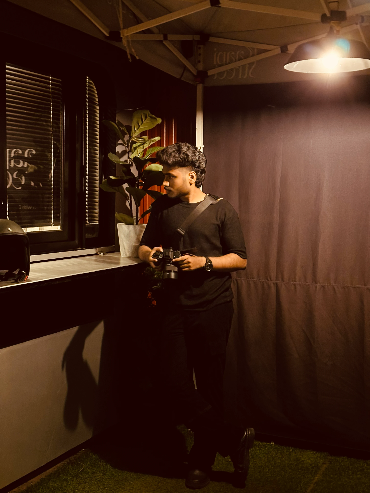
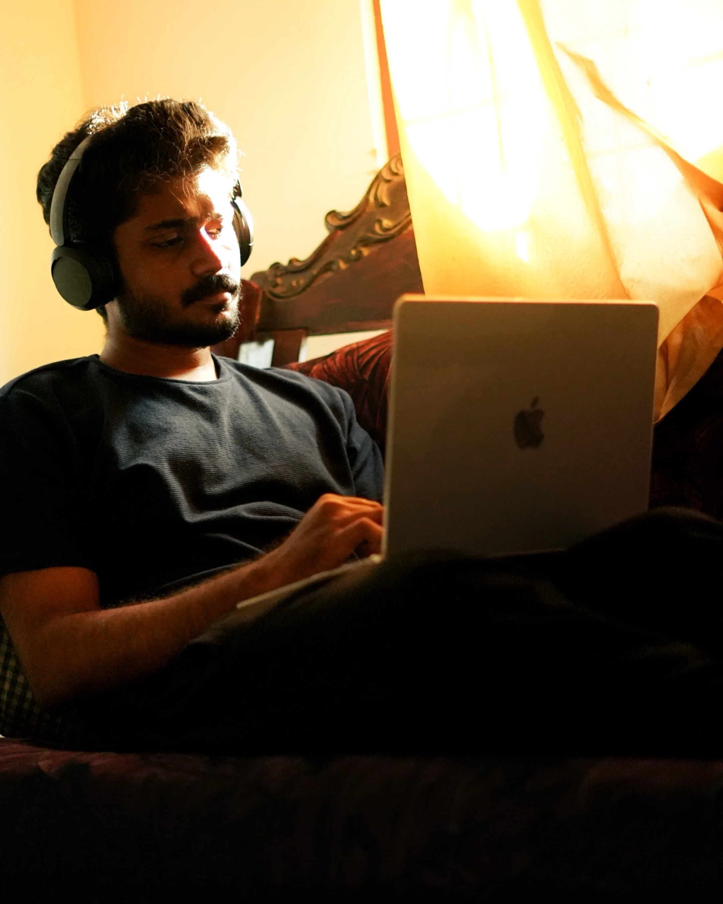

I'm a passionate and driven creative at the beginning of my professional journey in filmmaking and video production. With a strong eye for storytelling and visual design, I specialize in creating impactful videos — from concept to final edit.
As a filmmaker, VFX artist, cinematographer, and editor, I bring energy, curiosity, and a commitment to precision in every project I take on. Whether it's capturing cinematic footage or adding powerful visual effects, I strive to deliver work that speaks clearly and emotionally.
Eager to grow and collaborate, I’m ready to bring fresh ideas and dedication to every frame. Let's build something exceptional together.